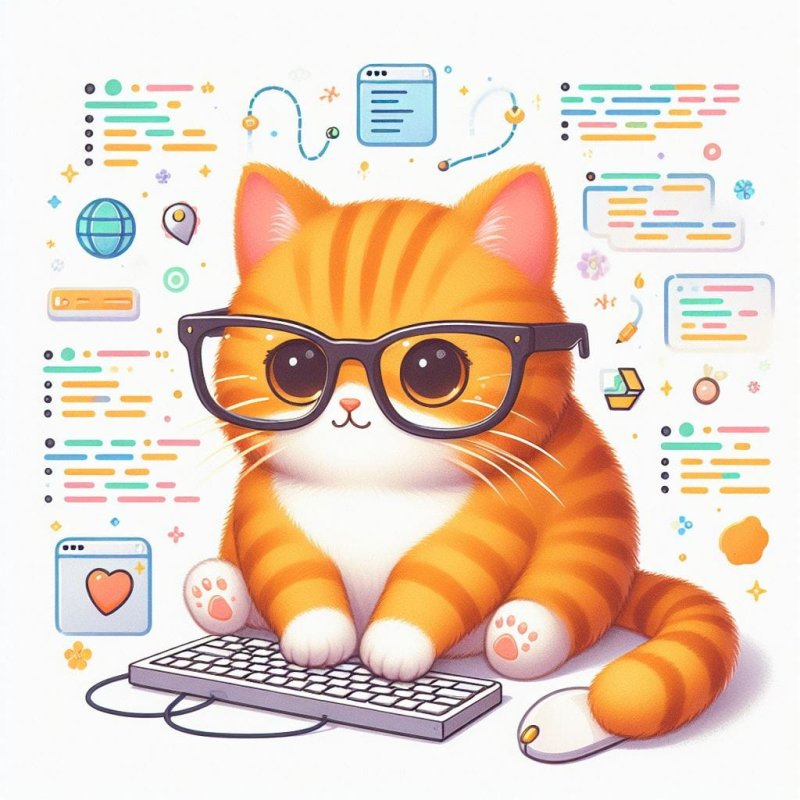

Hi, I'm Code Whiskers 🐱
I'm the tabby with a talent for tackling tough tech troubles. During the sunlight hours, I gracefully navigate through nests of code, effortlessly eradicating errors with my keen feline instincts.
As night envelops the sky, I nestle among the keys, visions of binary dancing in my head, while concocting revolutionary software that's bound to cause a purr in the digital domain.
Skills
HTML-C
2 years experience
FelineJava
1,5 years experience
CatScript
10 years experience
Recat
1 year experience
Node.purr
1 year experience

CatSS
2 years experience
Purrthon
3 years experience